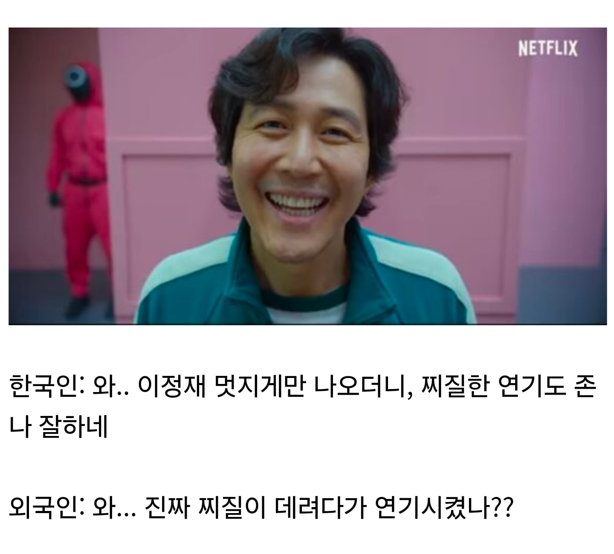

한국인들 머릿속의 이정재

한국인들 머릿속의 이정재

이제 신세계 보여주면 외국애들 질질 싸려나
앗! 에이시안들은 비슷하게 보여서 몰랐다네요!
외국인들 신세계 같이보기 그런거 있는데 반응 맛도리임ㅋㅋㅋㅋ
갱스터가 왜 총안쓰고 가오만잡아?
대부에서 두목이 총질하디?
대부님
총질 당함
면을 조용히 먹음으로써 여러 사람 살렸지
ㄹㅇ 천민 먹부림을 종결시킨 왕의 혈통 ㅋㅋㅋ
그 부분은 항상 감사해하고 있음
애초에 이정재가 찌질핰 양아치 연기로 떳다가 여러가지로 망해가고 있었는데 도둑들로 다시 찌질 뽀빠이로 잘되서 무게감 있는 배역으로 잘 돌아간거지 사실상 배우컬러는 저게 더 맞음
저양반 모래시계로 떳어 뭔 양아치여
데뷔초에 연기 못해서 걍 보디가드로 대사 없이 서 있을때 말고 태양은 없다로 더 각잌됨
느낌 젊은남자에서 청춘스타 반열 오른 후 모래시계 신드롬급 인기로 십여년을 버틴거임
태양은 없다는 나중에 재평가된거지 당시 그렇게 대단한 흥행작도 아니었음
모래시계로 뜨고 군바하고 절절거리다가 태양은없다로 빵뜨고 또 절절거리다가 도둑들 관상 신세계로 빵빵 터진건데
천하제일 늙크크 대회중인겨?
모래시계 이전에 느낌에 나왔을때부터 동년배 여자애들 이정재 나오면 아주기냥 질질싸고 난리였어 시작은 청춘스타였지
구멍이 두개지요
트루 반골, 이리의 상...
대부분의 배역이...
신세계는 밤 10시나 11시쯤 OCN에서 틀어주는 게 제일임ㅋㅋ
관상 저거 등장씬이 ㅋㅋㅋ..
진짜 역대급 등장씬이긴 했음
저옷이 근데 여진족 옷이라고했나? 한국옷이 아니라고하던데
거 중구형 너무 심한거 아니오!
어 놀랬어? 쏘리~
장난이 너무 심한거 아니오
수양대군 납시오!!!!!
나 연기한다 하고 하긴하는데
보면서 줘 패고싶을정도 였으면 연기 잘한거겠지?
이자성 회장님이었다고
딸 선물 준다고 인형뽑기할때 존나 질려버림
헌데, 관상가 양반! 생각해보니 영 이상하구만!!
동양인 최초 제다이도 하신 분이다.
외국가니까 이정재한테
오겜덕에 유명한 배우되니까 어때요? 이지랄하던데
해외에선 오겜덕에 유명배우 됬으니깐
시이발 기훈이형!